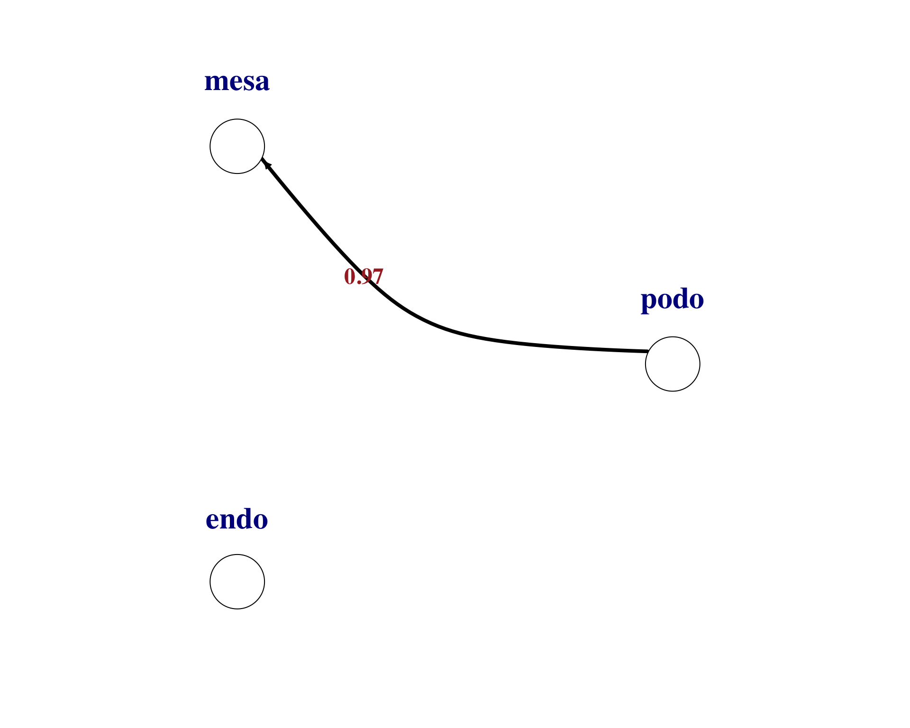

Last updated: 2020-09-24
Checks: 6 1
Knit directory: interaction-tools/
This reproducible R Markdown analysis was created with workflowr (version 1.6.2). The Checks tab describes the reproducibility checks that were applied when the results were created. The Past versions tab lists the development history.
The R Markdown file has unstaged changes. To know which version of the R Markdown file created these results, you’ll want to first commit it to the Git repo. If you’re still working on the analysis, you can ignore this warning. When you’re finished, you can run wflow_publish to commit the R Markdown file and build the HTML.
Great job! The global environment was empty. Objects defined in the global environment can affect the analysis in your R Markdown file in unknown ways. For reproduciblity it’s best to always run the code in an empty environment.
The command set.seed(20191213) was run prior to running the code in the R Markdown file. Setting a seed ensures that any results that rely on randomness, e.g. subsampling or permutations, are reproducible.
Great job! Recording the operating system, R version, and package versions is critical for reproducibility.
Nice! There were no cached chunks for this analysis, so you can be confident that you successfully produced the results during this run.
Great job! Using relative paths to the files within your workflowr project makes it easier to run your code on other machines.
Great! You are using Git for version control. Tracking code development and connecting the code version to the results is critical for reproducibility.
The results in this page were generated with repository version d6b5957. See the Past versions tab to see a history of the changes made to the R Markdown and HTML files.
Note that you need to be careful to ensure that all relevant files for the analysis have been committed to Git prior to generating the results (you can use wflow_publish or wflow_git_commit). workflowr only checks the R Markdown file, but you know if there are other scripts or data files that it depends on. Below is the status of the Git repository when the results were generated:
Ignored files:
Ignored: .Rhistory
Ignored: .Rproj.user/
Ignored: .drake/
Ignored: data/COMUNET/
Ignored: data/CellChat/
Ignored: data/NicheNet/
Ignored: data/cellphonedb/
Ignored: output/14-CellChat.Rmd/
Ignored: output/15-talklr.Rmd/
Ignored: output/index.Rmd/
Ignored: renv/library/
Ignored: renv/python/
Ignored: renv/staging/
Unstaged changes:
Modified: analysis/15-talklr.Rmd
Note that any generated files, e.g. HTML, png, CSS, etc., are not included in this status report because it is ok for generated content to have uncommitted changes.
These are the previous versions of the repository in which changes were made to the R Markdown (analysis/15-talklr.Rmd) and HTML (docs/15-talklr.html) files. If you’ve configured a remote Git repository (see ?wflow_git_remote), click on the hyperlinks in the table below to view the files as they were in that past version.
| File | Version | Author | Date | Message |
|---|---|---|---|---|
| Rmd | d6b5957 | Luke Zappia | 2020-09-24 | Set up talklr document |
| html | d6b5957 | Luke Zappia | 2020-09-24 | Set up talklr document |
# Setup document
source(here::here("code", "setup.R"))
# Function dependencies
invisible(drake::readd(download_link))In this document we are going to run through the example analysis for the talklr package and have a look at the output it produces. More information about talklr can be found at https://github.com/yuliangwang/talklr.
library("talklr")
library("dplyr")Chunk time: 0.09 secs
The main input to talklr is a data.frame with mean expression values for each cell type. These should be normalised for sequencing depth but not gene length and must not be log-transformed.
expr <- read.table(
system.file(
"extdata", "glom_normal_data.txt",
package = "talklr"
),
header = TRUE,
sep = "\t"
)
skim(expr)| Name | expr |
| Number of rows | 49947 |
| Number of columns | 4 |
| _______________________ | |
| Column type frequency: | |
| character | 1 |
| numeric | 3 |
| ________________________ | |
| Group variables | None |
Variable type: character
| skim_variable | n_missing | complete_rate | min | max | empty | n_unique | whitespace |
|---|---|---|---|---|---|---|---|
| genes | 0 | 1 | 0 | 16 | 1753 | 48037 | 0 |
Variable type: numeric
| skim_variable | n_missing | complete_rate | mean | sd | p0 | p25 | p50 | p75 | p100 | hist |
|---|---|---|---|---|---|---|---|---|---|---|
| podo | 0 | 1 | 19.93 | 1288.81 | 0 | 0 | 0.01 | 2.79 | 226195.4 | ▇▁▁▁▁ |
| mesa | 0 | 1 | 19.91 | 1176.52 | 0 | 0 | 0.10 | 3.86 | 203422.4 | ▇▁▁▁▁ |
| endo | 0 | 1 | 19.92 | 1399.89 | 0 | 0 | 0.11 | 3.21 | 238898.1 | ▇▁▁▁▁ |
Chunk time: 0.34 secs
There is also a second example dataset from another condition.
expr_fsgs <- read.table(
system.file(
"extdata", "glom_fsgs_data.txt",
package = "talklr"
),
header = TRUE,
sep = "\t"
)
skim(expr_fsgs)| Name | expr_fsgs |
| Number of rows | 49947 |
| Number of columns | 4 |
| _______________________ | |
| Column type frequency: | |
| character | 1 |
| numeric | 3 |
| ________________________ | |
| Group variables | None |
Variable type: character
| skim_variable | n_missing | complete_rate | min | max | empty | n_unique | whitespace |
|---|---|---|---|---|---|---|---|
| genes | 0 | 1 | 0 | 16 | 1753 | 48037 | 0 |
Variable type: numeric
| skim_variable | n_missing | complete_rate | mean | sd | p0 | p25 | p50 | p75 | p100 | hist |
|---|---|---|---|---|---|---|---|---|---|---|
| podo | 0 | 1 | 19.95 | 1695.24 | 0 | 0 | 0.03 | 2.63 | 308256.7 | ▇▁▁▁▁ |
| mesa | 0 | 1 | 19.93 | 1569.87 | 0 | 0 | 0.15 | 3.01 | 272528.5 | ▇▁▁▁▁ |
| endo | 0 | 1 | 19.92 | 1497.73 | 0 | 0 | 0.10 | 3.22 | 235597.0 | ▇▁▁▁▁ |
Chunk time: 0.29 secs
A ligand-receptor database is included as part of the talklr package. This is used automatically during the analysis.
skim(talklr::receptor_ligand)| Name | talklr::receptor_ligand |
| Number of rows | 2422 |
| Number of columns | 16 |
| _______________________ | |
| Column type frequency: | |
| character | 16 |
| ________________________ | |
| Group variables | None |
Variable type: character
| skim_variable | n_missing | complete_rate | min | max | empty | n_unique | whitespace |
|---|---|---|---|---|---|---|---|
| Pair.Name | 0 | 1.00 | 5 | 18 | 0 | 2422 | 0 |
| Ligand.ApprovedSymbol | 0 | 1.00 | 2 | 9 | 0 | 695 | 0 |
| Ligand.Name | 0 | 1.00 | 5 | 139 | 0 | 695 | 0 |
| Receptor.ApprovedSymbol | 0 | 1.00 | 2 | 9 | 0 | 652 | 0 |
| Receptor.Name | 0 | 1.00 | 7 | 101 | 0 | 652 | 0 |
| DLRP | 1957 | 0.19 | 4 | 4 | 0 | 1 | 0 |
| HPMR | 1596 | 0.34 | 4 | 4 | 0 | 1 | 0 |
| IUPHAR | 2067 | 0.15 | 6 | 6 | 0 | 1 | 0 |
| HPRD | 1154 | 0.52 | 4 | 4 | 0 | 1 | 0 |
| STRING.binding | 1113 | 0.54 | 14 | 14 | 0 | 1 | 0 |
| STRING.experiment | 2003 | 0.17 | 17 | 17 | 0 | 1 | 0 |
| HPMR.Ligand | 567 | 0.77 | 2 | 8 | 0 | 458 | 0 |
| HPMR.Receptor | 310 | 0.87 | 2 | 9 | 0 | 505 | 0 |
| PMID.Manual | 2149 | 0.11 | 6 | 18 | 0 | 185 | 0 |
| Pair.Source | 0 | 1.00 | 5 | 5 | 0 | 2 | 0 |
| Pair.Evidence | 0 | 1.00 | 8 | 20 | 0 | 2 | 0 |
Chunk time: 0.12 secs
The first step in a talklr analysis is to construct a network of ligand-receptor interactions and prioritise them using Kullback-Leibler divergence. The output is a data.frame with the ligand-receptor pairs, their expression in different cell types and the KL score.
lr_net <- make_expressed_net(
expr,
expressed_thresh = 4,
receptor_ligand,
KL_method = "product",
pseudo_count = 1
)
lr_net <- arrange(lr_net, desc(KL))
skim(lr_net)| Name | lr_net |
| Number of rows | 652 |
| Number of columns | 23 |
| _______________________ | |
| Column type frequency: | |
| character | 16 |
| numeric | 7 |
| ________________________ | |
| Group variables | None |
Variable type: character
| skim_variable | n_missing | complete_rate | min | max | empty | n_unique | whitespace |
|---|---|---|---|---|---|---|---|
| Pair.Name | 0 | 1.00 | 7 | 17 | 0 | 652 | 0 |
| Ligand.ApprovedSymbol | 0 | 1.00 | 2 | 8 | 0 | 199 | 0 |
| Ligand.Name | 0 | 1.00 | 5 | 112 | 0 | 199 | 0 |
| Receptor.ApprovedSymbol | 0 | 1.00 | 2 | 9 | 0 | 197 | 0 |
| Receptor.Name | 0 | 1.00 | 7 | 92 | 0 | 197 | 0 |
| DLRP | 534 | 0.18 | 4 | 4 | 0 | 1 | 0 |
| HPMR | 457 | 0.30 | 4 | 4 | 0 | 1 | 0 |
| IUPHAR | 620 | 0.05 | 6 | 6 | 0 | 1 | 0 |
| HPRD | 335 | 0.49 | 4 | 4 | 0 | 1 | 0 |
| STRING.binding | 255 | 0.61 | 14 | 14 | 0 | 1 | 0 |
| STRING.experiment | 536 | 0.18 | 17 | 17 | 0 | 1 | 0 |
| HPMR.Ligand | 159 | 0.76 | 2 | 8 | 0 | 137 | 0 |
| HPMR.Receptor | 67 | 0.90 | 2 | 9 | 0 | 164 | 0 |
| PMID.Manual | 568 | 0.13 | 7 | 18 | 0 | 70 | 0 |
| Pair.Source | 0 | 1.00 | 5 | 5 | 0 | 2 | 0 |
| Pair.Evidence | 0 | 1.00 | 8 | 20 | 0 | 2 | 0 |
Variable type: numeric
| skim_variable | n_missing | complete_rate | mean | sd | p0 | p25 | p50 | p75 | p100 | hist |
|---|---|---|---|---|---|---|---|---|---|---|
| ligand_podo | 0 | 1 | 110.11 | 324.72 | 1.00 | 2.76 | 6.39 | 61.24 | 1806.63 | ▇▁▁▁▁ |
| ligand_mesa | 0 | 1 | 139.25 | 642.01 | 1.02 | 5.54 | 22.80 | 69.78 | 10226.73 | ▇▁▁▁▁ |
| ligand_endo | 0 | 1 | 100.74 | 759.82 | 1.00 | 2.76 | 13.21 | 52.53 | 13475.95 | ▇▁▁▁▁ |
| receptor_podo | 0 | 1 | 130.63 | 306.47 | 1.00 | 3.04 | 12.03 | 92.05 | 2099.77 | ▇▁▁▁▁ |
| receptor_mesa | 0 | 1 | 151.43 | 283.86 | 1.00 | 8.65 | 32.30 | 151.70 | 1971.31 | ▇▁▁▁▁ |
| receptor_endo | 0 | 1 | 120.88 | 218.35 | 1.00 | 3.58 | 20.48 | 105.59 | 1202.78 | ▇▁▁▁▁ |
| KL | 0 | 1 | 1.29 | 0.61 | 0.01 | 0.81 | 1.29 | 1.72 | 2.90 | ▃▇▇▅▁ |
Chunk time: 0.2 secs
We can then visualise individual ligand-receptor pair interactions between cell types. Here are examples for the top two pairs.
plot_lr_wiring(
ligand_exprs = as.numeric(lr_net[1, 17:19]),
receptor_exprs = as.numeric(lr_net[1, 20:22]),
cell_labels = c("podo","mesa","endo"),
thresh = 0
)
plot_lr_wiring(
ligand_exprs = as.numeric(lr_net[2, 17:19]),
receptor_exprs = as.numeric(lr_net[2, 20:22]),
cell_labels = c("podo","mesa","endo"),
thresh = 0
)Chunk time: 0.24 secs
Testing for differential expression can be used to select those pairs where both the ligand and receptor are “marker” genes for a cell type.
lr_net_deg <- make_deg_net(
expr,
lr_net,
fc_thresh = 3,
pseudo_count = 1
)Chunk time: 0.1 secs
There are 198 pairs selected using this method.
There is another mode in talklr that lets us compare between conditions.
First we select genes that are expressed in at least one cell type in at least one of the conditions. We set a threshold of at least 4 in at least 1 cell type.
expressed_norm <- rowSums(expr[, 2:ncol(expr)] > 4) >= 1
expressed_fsgs <- rowSums(expr_fsgs[, 2:ncol(expr_fsgs)] > 4) >= 1
expressed_genes <- expr$genes[expressed_norm | expressed_fsgs]Chunk time: 0.06 secs
We then build a network for each condition.
norm_net <- make_expressed_net_specify_expressed_genes(
expr,
expressed_genes,
receptor_ligand,
KL_method = "product"
)
fsgs_net <- make_expressed_net_specify_expressed_genes(
expr_fsgs,
expressed_genes,
receptor_ligand,
KL_method = "product"
)Chunk time: 0.06 secs
Once we have the two conditions we can compare them to look at the differences. The result from this is similar to what we get for a single condition but with an extra column scoring the difference.
norm_net$fsgs_vs_norm_KL <- disease_vs_normal_KL(
fsgs_net[, 17:19],
fsgs_net[, 20:22],
norm_net[, 17:19],
norm_net[, 20:22],
pseudo_count = 1,
method = "product"
)
perturbed_net <- arrange(norm_net, desc(fsgs_vs_norm_KL))
skim(perturbed_net)| Name | perturbed_net |
| Number of rows | 722 |
| Number of columns | 24 |
| _______________________ | |
| Column type frequency: | |
| character | 16 |
| numeric | 8 |
| ________________________ | |
| Group variables | None |
Variable type: character
| skim_variable | n_missing | complete_rate | min | max | empty | n_unique | whitespace |
|---|---|---|---|---|---|---|---|
| Pair.Name | 0 | 1.00 | 7 | 17 | 0 | 722 | 0 |
| Ligand.ApprovedSymbol | 0 | 1.00 | 2 | 8 | 0 | 215 | 0 |
| Ligand.Name | 0 | 1.00 | 5 | 112 | 0 | 215 | 0 |
| Receptor.ApprovedSymbol | 0 | 1.00 | 2 | 9 | 0 | 208 | 0 |
| Receptor.Name | 0 | 1.00 | 7 | 92 | 0 | 208 | 0 |
| DLRP | 595 | 0.18 | 4 | 4 | 0 | 1 | 0 |
| HPMR | 505 | 0.30 | 4 | 4 | 0 | 1 | 0 |
| IUPHAR | 689 | 0.05 | 6 | 6 | 0 | 1 | 0 |
| HPRD | 372 | 0.48 | 4 | 4 | 0 | 1 | 0 |
| STRING.binding | 280 | 0.61 | 14 | 14 | 0 | 1 | 0 |
| STRING.experiment | 600 | 0.17 | 17 | 17 | 0 | 1 | 0 |
| HPMR.Ligand | 172 | 0.76 | 2 | 8 | 0 | 148 | 0 |
| HPMR.Receptor | 71 | 0.90 | 2 | 9 | 0 | 174 | 0 |
| PMID.Manual | 628 | 0.13 | 7 | 18 | 0 | 79 | 0 |
| Pair.Source | 0 | 1.00 | 5 | 5 | 0 | 2 | 0 |
| Pair.Evidence | 0 | 1.00 | 8 | 20 | 0 | 2 | 0 |
Variable type: numeric
| skim_variable | n_missing | complete_rate | mean | sd | p0 | p25 | p50 | p75 | p100 | hist |
|---|---|---|---|---|---|---|---|---|---|---|
| ligand_podo | 0 | 1 | 103.22 | 314.37 | 0.00 | 1.45 | 4.79 | 51.30 | 1805.63 | ▇▁▁▁▁ |
| ligand_mesa | 0 | 1 | 131.91 | 622.02 | 0.02 | 3.30 | 18.80 | 64.58 | 10225.73 | ▇▁▁▁▁ |
| ligand_endo | 0 | 1 | 96.06 | 730.41 | 0.00 | 1.72 | 9.95 | 41.85 | 13474.95 | ▇▁▁▁▁ |
| receptor_podo | 0 | 1 | 124.31 | 299.07 | 0.00 | 1.83 | 10.76 | 80.65 | 2098.77 | ▇▁▁▁▁ |
| receptor_mesa | 0 | 1 | 145.25 | 284.35 | 0.00 | 5.14 | 26.34 | 150.70 | 1970.31 | ▇▁▁▁▁ |
| receptor_endo | 0 | 1 | 114.67 | 216.12 | 0.00 | 2.43 | 15.85 | 99.10 | 1201.78 | ▇▁▁▁▁ |
| KL | 0 | 1 | 1.47 | 0.68 | 0.01 | 0.99 | 1.45 | 1.95 | 2.96 | ▃▅▇▅▂ |
| fsgs_vs_norm_KL | 0 | 1 | 0.13 | 0.13 | 0.00 | 0.06 | 0.10 | 0.17 | 1.55 | ▇▁▁▁▁ |
Chunk time: 0.15 secs
We can use the same plotting function to visualise the differences between the conditions.
pair <- "CCL2_ACKR2"
par(mfrow = c(1,2))
par(mar = c(0.3, 0.3, 0.3, 0.3))
plot_lr_wiring(
ligand_exprs = as.numeric(norm_net[norm_net$Pair.Name == pair, 17:19]),
receptor_exprs = as.numeric(norm_net[norm_net$Pair.Name == pair, 20:22]),
cell_labels = c("podo","mesa","endo"),
thresh = 0
)
plot_lr_wiring(
ligand_exprs = as.numeric(fsgs_net[fsgs_net$Pair.Name == pair, 17:19]),
receptor_exprs = as.numeric(fsgs_net[fsgs_net$Pair.Name == pair, 20:22]),
cell_labels = c("podo","mesa","endo"),
thresh = 0
)Chunk time: 0.11 secs
This table describes parameters used and set in this document.
params <- list(
)
params <- toJSON(params, pretty = TRUE)
kable(fromJSON(params))Chunk time: 0.01 secs
This table describes the output files produced by this document. Right click and Save Link As… to download the results.
kable(data.frame(
File = c(
download_link("parameters.json", OUT_DIR)
),
Description = c(
"Parameters set and used in this analysis"
)
))| File | Description |
|---|---|
| parameters.json | Parameters set and used in this analysis |
Chunk time: 0.01 secs
sessioninfo::session_info()─ Session info ───────────────────────────────────────────────────────────────
setting value
version R version 4.0.0 (2020-04-24)
os macOS Catalina 10.15.6
system x86_64, darwin17.0
ui X11
language (EN)
collate en_US.UTF-8
ctype en_US.UTF-8
tz Europe/Berlin
date 2020-09-24
─ Packages ───────────────────────────────────────────────────────────────────
! package * version date lib source
P assertthat 0.2.1 2019-03-21 [?] CRAN (R 4.0.0)
P backports 1.1.6 2020-04-05 [?] CRAN (R 4.0.0)
P base64enc 0.1-3 2015-07-28 [?] CRAN (R 4.0.0)
P base64url 1.4 2018-05-14 [?] standard (@1.4)
P broom 0.5.6 2020-04-20 [?] CRAN (R 4.0.0)
P cellranger 1.1.0 2016-07-27 [?] standard (@1.1.0)
P cli 2.0.2 2020-02-28 [?] CRAN (R 4.0.0)
P colorspace 1.4-1 2019-03-18 [?] standard (@1.4-1)
P conflicted * 1.0.4 2019-06-21 [?] standard (@1.0.4)
P crayon 1.3.4 2017-09-16 [?] CRAN (R 4.0.0)
P DBI 1.1.0 2019-12-15 [?] CRAN (R 4.0.0)
P dbplyr 1.4.3 2020-04-19 [?] CRAN (R 4.0.0)
P digest 0.6.25 2020-02-23 [?] CRAN (R 4.0.0)
P dplyr * 0.8.5 2020-03-07 [?] CRAN (R 4.0.0)
P drake 7.12.0 2020-03-25 [?] CRAN (R 4.0.0)
P ellipsis 0.3.0 2019-09-20 [?] CRAN (R 4.0.0)
P evaluate 0.14 2019-05-28 [?] standard (@0.14)
P fansi 0.4.1 2020-01-08 [?] CRAN (R 4.0.0)
P filelock 1.0.2 2018-10-05 [?] CRAN (R 4.0.0)
P forcats * 0.5.0 2020-03-01 [?] CRAN (R 4.0.0)
P fs * 1.4.1 2020-04-04 [?] CRAN (R 4.0.0)
P generics 0.0.2 2018-11-29 [?] standard (@0.0.2)
P ggplot2 * 3.3.0 2020-03-05 [?] CRAN (R 4.0.0)
P git2r 0.27.1 2020-05-03 [?] CRAN (R 4.0.0)
P glue * 1.4.0 2020-04-03 [?] CRAN (R 4.0.0)
P gtable 0.3.0 2019-03-25 [?] standard (@0.3.0)
P haven 2.2.0 2019-11-08 [?] standard (@2.2.0)
P here * 0.1 2017-05-28 [?] standard (@0.1)
P highr 0.8 2019-03-20 [?] standard (@0.8)
P hms 0.5.3 2020-01-08 [?] CRAN (R 4.0.0)
P htmltools 0.5.0 2020-06-16 [?] CRAN (R 4.0.2)
P httpuv 1.5.2 2019-09-11 [?] standard (@1.5.2)
P httr 1.4.1 2019-08-05 [?] standard (@1.4.1)
P igraph * 1.2.5 2020-03-19 [?] CRAN (R 4.0.0)
P jsonlite * 1.6.1 2020-02-02 [?] CRAN (R 4.0.0)
P knitr * 1.28 2020-02-06 [?] CRAN (R 4.0.0)
P later 1.0.0 2019-10-04 [?] standard (@1.0.0)
P lattice 0.20-41 2020-04-02 [?] CRAN (R 4.0.0)
P lifecycle 0.2.0 2020-03-06 [?] CRAN (R 4.0.0)
P lubridate 1.7.8 2020-04-06 [?] CRAN (R 4.0.0)
P magrittr 1.5 2014-11-22 [?] CRAN (R 4.0.0)
P Matrix 1.2-18 2019-11-27 [?] standard (@1.2-18)
P memoise 1.1.0 2017-04-21 [?] standard (@1.1.0)
P modelr 0.1.7 2020-04-30 [?] CRAN (R 4.0.0)
P munsell 0.5.0 2018-06-12 [?] standard (@0.5.0)
P nlme 3.1-147 2020-04-13 [?] CRAN (R 4.0.0)
P pander * 0.6.3 2018-11-06 [?] CRAN (R 4.0.0)
P pillar 1.4.4 2020-05-05 [?] CRAN (R 4.0.0)
P pkgconfig 2.0.3 2019-09-22 [?] CRAN (R 4.0.0)
P prettyunits 1.1.1 2020-01-24 [?] CRAN (R 4.0.0)
P progress 1.2.2 2019-05-16 [?] CRAN (R 4.0.0)
P promises 1.1.0 2019-10-04 [?] standard (@1.1.0)
P purrr * 0.3.4 2020-04-17 [?] CRAN (R 4.0.0)
P R6 2.4.1 2019-11-12 [?] CRAN (R 4.0.0)
P Rcpp 1.0.4.6 2020-04-09 [?] CRAN (R 4.0.0)
P readr * 1.3.1 2018-12-21 [?] standard (@1.3.1)
P readxl 1.3.1 2019-03-13 [?] standard (@1.3.1)
P renv 0.12.0 2020-08-28 [?] CRAN (R 4.0.2)
P repr 1.1.0 2020-01-28 [?] CRAN (R 4.0.0)
P reprex 0.3.0 2019-05-16 [?] standard (@0.3.0)
P reticulate 1.16 2020-05-27 [?] CRAN (R 4.0.2)
P rlang 0.4.6 2020-05-02 [?] CRAN (R 4.0.0)
P rmarkdown 2.1 2020-01-20 [?] CRAN (R 4.0.0)
P rprojroot 1.3-2 2018-01-03 [?] CRAN (R 4.0.0)
P rstudioapi 0.11 2020-02-07 [?] CRAN (R 4.0.0)
P rvest 0.3.5 2019-11-08 [?] standard (@0.3.5)
P scales 1.1.0 2019-11-18 [?] standard (@1.1.0)
P sessioninfo 1.1.1 2018-11-05 [?] CRAN (R 4.0.0)
P skimr * 2.1.1 2020-04-16 [?] CRAN (R 4.0.0)
P storr 1.2.1 2018-10-18 [?] standard (@1.2.1)
P stringi 1.4.6 2020-02-17 [?] CRAN (R 4.0.0)
P stringr * 1.4.0 2019-02-10 [?] CRAN (R 4.0.0)
P talklr * 0.0.0.9000 2020-09-24 [?] Github (yuliangwang/talklr@12584be)
P tibble * 3.0.1 2020-04-20 [?] CRAN (R 4.0.0)
P tidyr * 1.0.3 2020-05-07 [?] CRAN (R 4.0.0)
P tidyselect 1.0.0 2020-01-27 [?] CRAN (R 4.0.0)
P tidyverse * 1.3.0 2019-11-21 [?] standard (@1.3.0)
P txtq 0.2.0 2019-10-15 [?] standard (@0.2.0)
P vctrs 0.2.4 2020-03-10 [?] CRAN (R 4.0.0)
P whisker 0.4 2019-08-28 [?] standard (@0.4)
P withr 2.2.0 2020-04-20 [?] CRAN (R 4.0.0)
P workflowr 1.6.2 2020-04-30 [?] CRAN (R 4.0.0)
P xfun 0.13 2020-04-13 [?] CRAN (R 4.0.0)
P xml2 1.3.2 2020-04-23 [?] CRAN (R 4.0.0)
P yaml 2.2.1 2020-02-01 [?] CRAN (R 4.0.0)
[1] /Users/luke.zappia/Documents/Projects/interaction-tools/renv/library/R-4.0/x86_64-apple-darwin17.0
[2] /private/var/folders/rj/60lhr791617422kqvh0r4vy40000gn/T/RtmpX6ShKP/renv-system-library
[3] /Library/Frameworks/R.framework/Versions/4.0/Resources/library
P ── Loaded and on-disk path mismatch.Chunk time: 0.19 secs